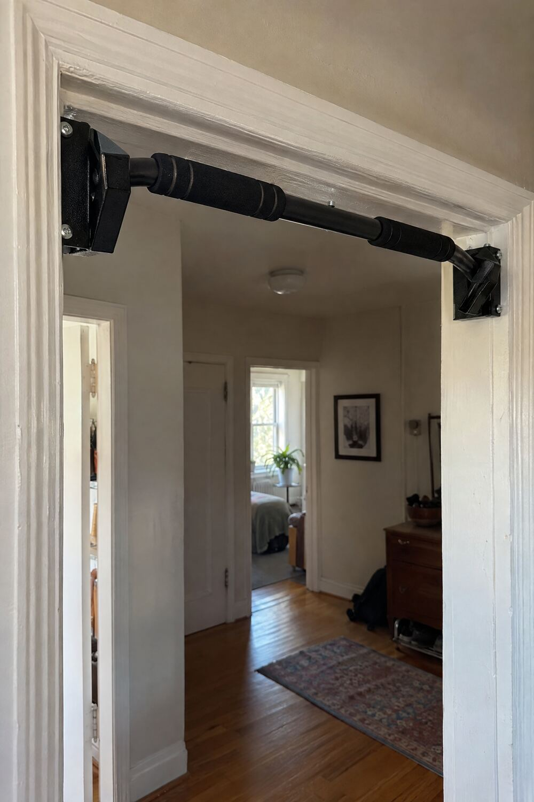
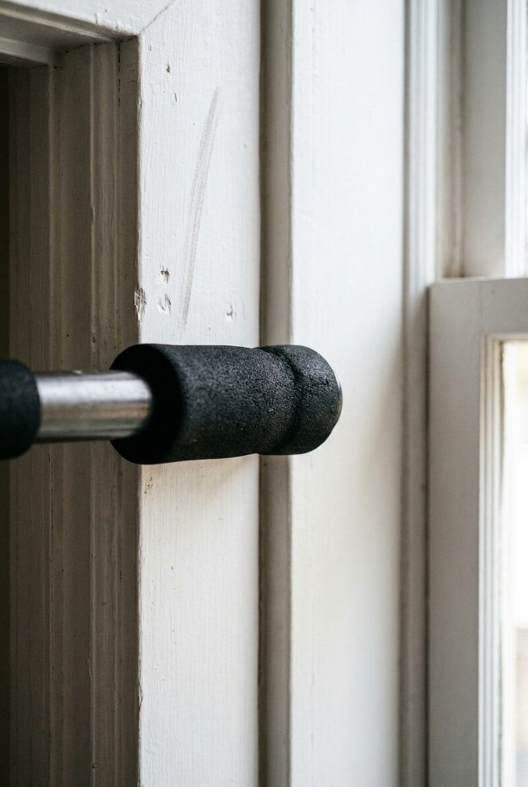
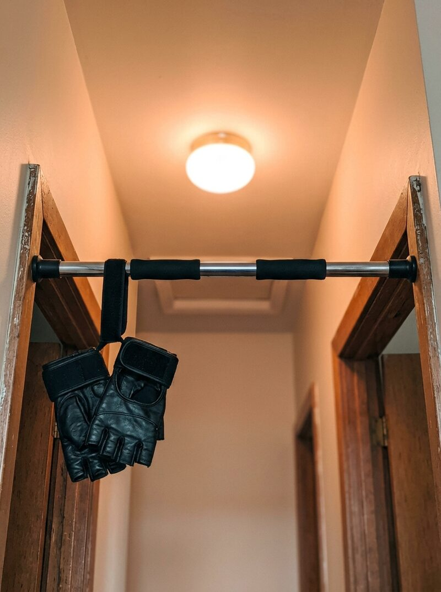
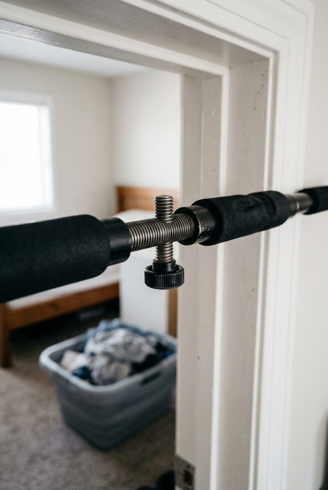
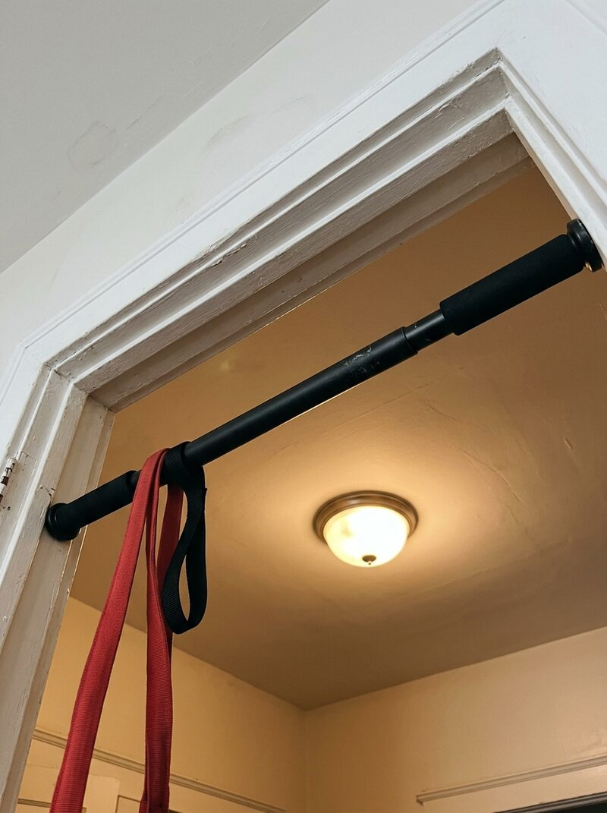
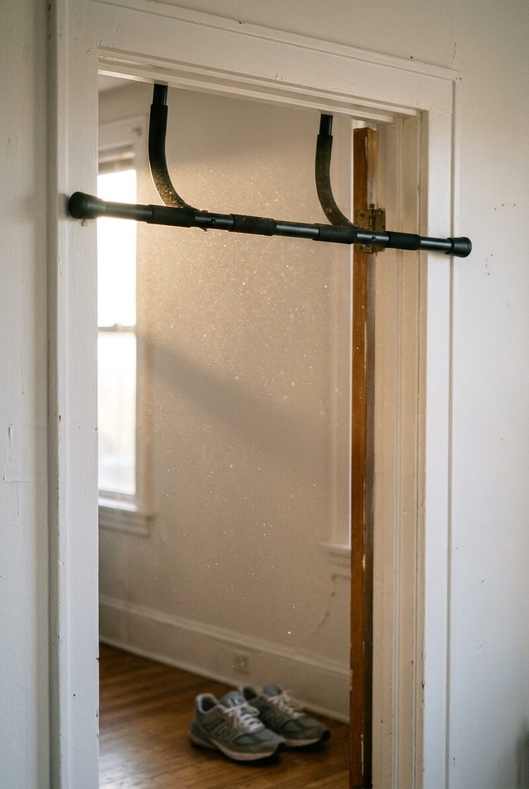
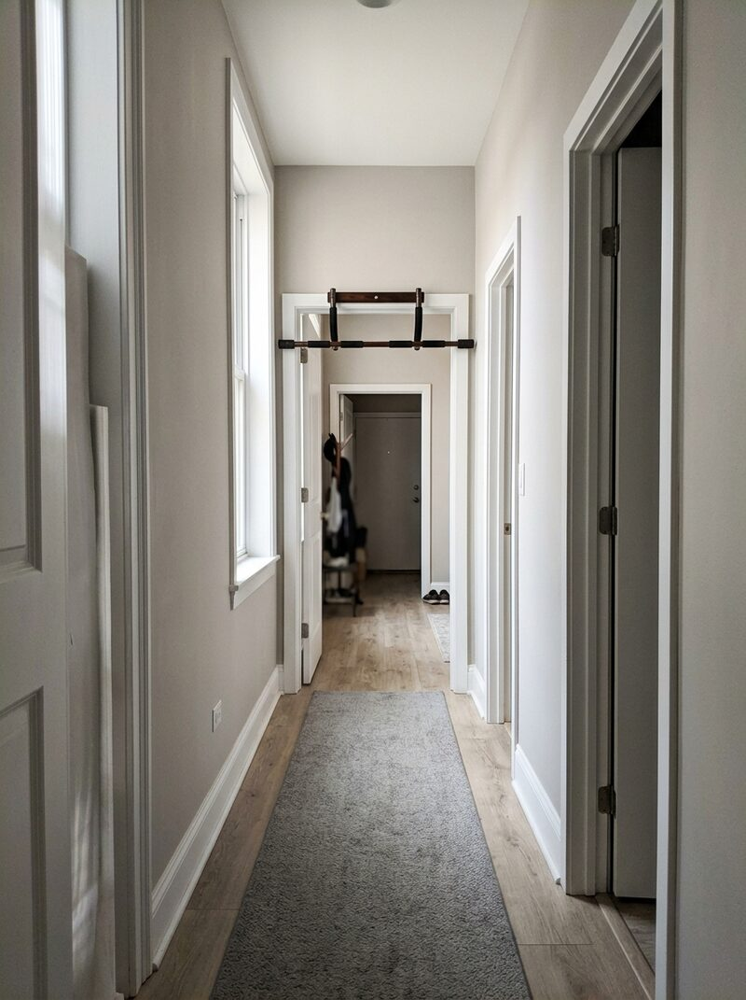
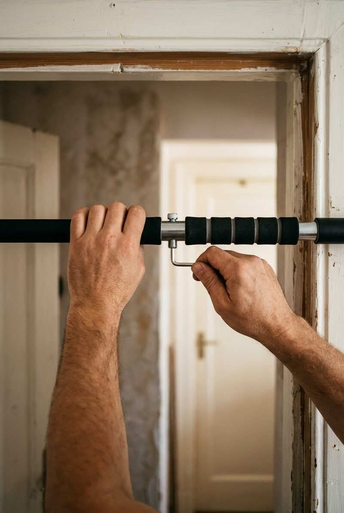
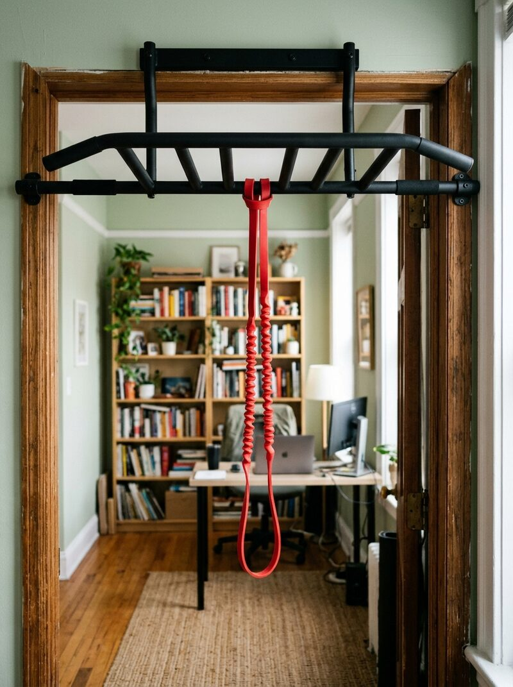

Screw-in bars are everywhere, they're cheap, and they're the worst thing you can put in a rented door frame — four holes you'll be patching before you move out. Tension-mounted bars hold your full body weight with pressure and padded end caps instead, no screws, and come down in seconds when you're done.

Padding thickness on the end cap matters more than the bar material itself — thin padding is what actually scuffs paint over repeated use.

The tension screw is doing all the work here — no drilling, and the frame looks exactly the same once the bar comes down.

A close look at the adjustable mechanism that lets the bar grip a range of door frame widths without a single screw into the wood.

A tension-mounted bar in a sunlit doorway holds full body weight and a resistance band, with nothing left behind on the frame.

A hallway doorway works just as well as a bedroom one — the bar goes wherever the frame width fits.

Installed at the end of a hallway, it's there every time you walk past — no separate trip to a gym corner required.

No drill, no bits to find — just two hands and a turn of the tension screw to lock it in place.

A bar in the home office doorway turns a work break into a quick set — no separate workout space needed.